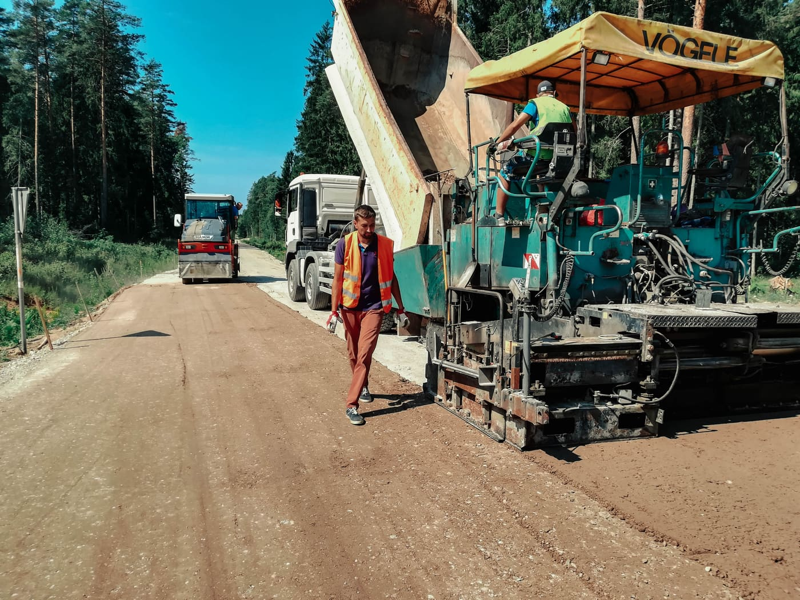
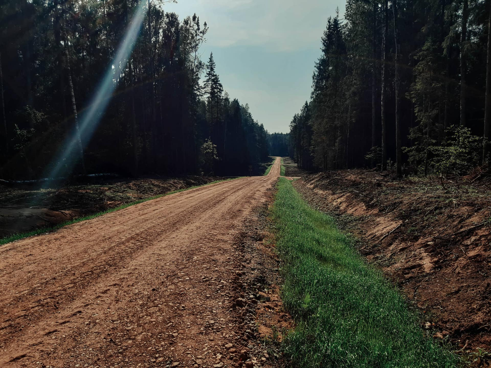
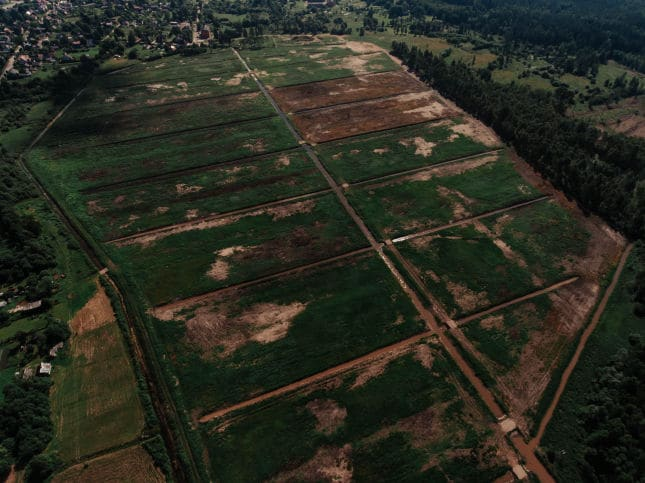
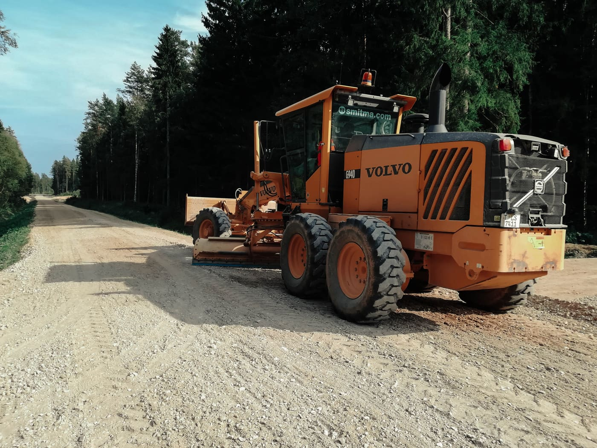

Ceļu būvniecība
Nesaistītu minerālmateriālu segumi, zemes darbi, ierakumu un uzbērumu izbūve ar konstruktīvajām kārtām.
Par ceļu būvniecību
SIA “Ceļu Būvnieks” ir 2007. gadā dibināts Latvijas ceļu būves uzņēmums. Specializējamies nesaistīto segumu, meliorācijas sistēmu un hidrotehnisko būvju būvniecībā, kā arī autoceļu uzturēšanā.

Nesaistītu minerālmateriālu segumi, zemes darbi, ierakumu un uzbērumu izbūve ar konstruktīvajām kārtām.
Par ceļu būvniecību
Upju tīrīšana, caurtekas un drenāža. Grāvju un dambju nostiprināšana, ugunsdzēsības baseini.
Par meliorāciju
Planēšana, bedru labošana, caurteku un grāvju tīrīšana. Ziemā sniega tīrīšana un kaisīšana.
Par uzturēšanuCiti darbi, ko veicam pilnā ciklā.